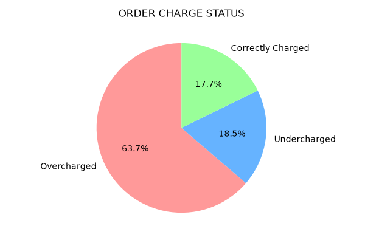
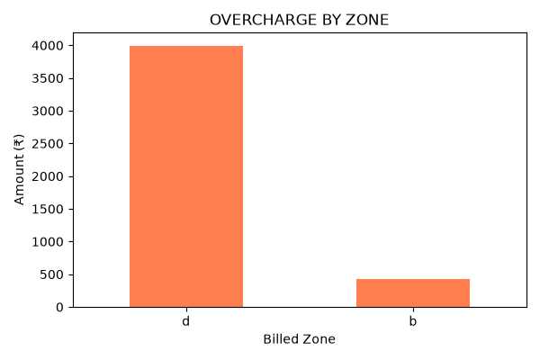
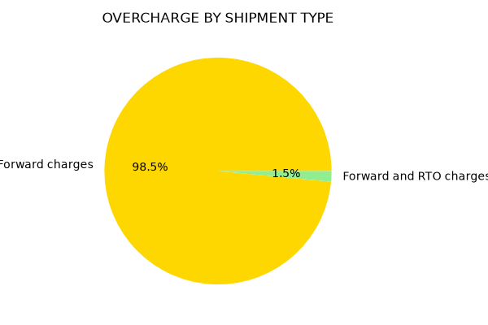
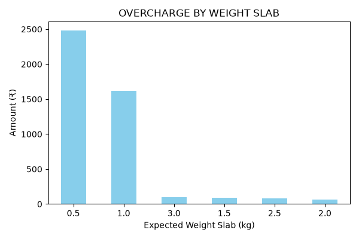

In contemporary e-commerce and retail supply chains, third-party logistics (3PL) fulfillment represents one of the largest variable operational expenditures, routinely accounting for 15% to 25% of total operating expenses. E-commerce platforms partner with domestic courier companies (e.g., Delhivery, BlueDart, XpressBees) that invoice periodically for freight, pickup, and delivery services. Courier pricing schedules are governed by multi-tier rate cards determined by delivery zone classifications, parcel gross weight, volumetric weight, and shipment disposition (Forward Delivery vs. Return-to-Origin / RTO).
Due to manual invoice processing, scale measurement variances, and lack of automated pre-payment auditing, e-commerce enterprises suffer from substantial logistics cost leakage, frequently forfeiting 2% to 8% of total logistics spend to erroneous billing.
This capstone project establishes an end-to-end automated 3-Way Reconciliation and Pre-Payment Audit Pipeline across an audited cohort of 124 customer shipments. By integrating internal Warehouse Management System (WMS) SKU weights, customer pin code matrices, and contractual rate cards, the system independently verifies every invoiced charge to eliminate cost leakage.
This project was developed independently using real-world e-commerce logistics and billing benchmark datasets. The complete analysis notebook, scripts, and datasets are accessible directly:
courier_invoice_reconciliation.ipynb (Direct Notebook Link on GitHub).Final_Reconciliation_Dashboard.xlsx.
I, Madhavdas M (Roll Number: 24f1001336), student of the Indian Institute of Technology Madras (IIT Madras) in the BS Degree in Data Science and Applications program, hereby declare that this report, the accompanying Jupyter Notebook (courier_invoice_reconciliation.ipynb), the automation scripts, the descriptive statistics, and the automated auditing architecture represent my original analytical work for the BDM Capstone Project.
To capture the distributional properties, dispersion, and central tendencies across the operational datasets, detailed parametric and non-parametric summary statistics were calculated for all numerical variables:
| Numerical Variable | N | Mean (μ) | Std (σ) | Min | Q1 (25%) | Median (Q2) | Q3 (75%) | IQR | Max |
|---|---|---|---|---|---|---|---|---|---|
| Order Quantity (Order Report) | 400 | 1.2975 | 0.9198 | 1.0000 | 1.0000 | 1.0000 | 1.0000 | 0.0000 | 8.0000 |
| Item Weight (g) (SKU Master) | 66 | 219.7424 | 146.8555 | 10.0000 | 116.2500 | 165.0000 | 290.0000 | 173.7500 | 600.0000 |
| Total Weight (kg) [Actual] | 124 | 0.7135 | 0.4995 | 0.0650 | 0.5000 | 0.5560 | 0.8325 | 0.3325 | 3.0800 |
| Expected Weight Slab (kg) | 124 | 0.9274 | 0.5692 | 0.5000 | 0.5000 | 1.0000 | 1.0000 | 0.5000 | 3.5000 |
| Charged Weight (kg) [Courier] | 124 | 0.9560 | 0.6628 | 0.1500 | 0.6675 | 0.7250 | 1.1000 | 0.4325 | 4.1300 |
| Weight Difference (kg) [Charged - Actual] | 124 | 0.2425 | 0.5334 | -0.5760 | 0.0000 | 0.1580 | 0.2020 | 0.2020 | 3.3650 |
| Expected Charge (Rs.) [Contractual] | 124 | 79.4532 | 64.2853 | 33.0000 | 33.0000 | 61.3000 | 90.2000 | 57.2000 | 355.5000 |
| Billing Amount (Rs.) [Invoiced] | 124 | 110.0661 | 64.0608 | 33.0000 | 86.7000 | 90.2000 | 135.0000 | 48.3000 | 403.8000 |
| Difference (Rs.) [Expected - Billed] | 124 | -30.6129 | 54.2380 | -342.5000 | -57.2000 | -28.9000 | 0.0000 | 57.2000 | 160.7000 |
| Overcharge Amount (Rs.) [79 Orders] | 79 | 56.0329 | 48.7690 | 4.7000 | 28.9000 | 44.8000 | 57.2000 | 28.3000 | 342.5000 |




A. Delivery Zone Segment (Zone D Dominance):
Zone D accounts for ₹3,997.40 (90.31%) of the total overcharge amount, whereas Zone B accounts for ₹429.20 (9.69%).
Why? Out of 79 orders contractually mapped to Zone B, 60 orders were billed under Zone D. Comparing the contractual rate cards reveals the financial consequence:
B. Shipment Type Segment (Forward Charges Dominance):
Forward charges account for ₹4,360.20 (98.50%) of overcharges across 77 orders, while Forward + RTO represents only ₹66.40 (1.50%).
Why? Standard forward deliveries represent 87.90% of total fulfillment volume. Courier billing algorithms apply systemic markups across high-frequency forward shipments because standard deliveries routinely bypass manual finance scrutiny.
As depicted in Figure 4, the 0.5 kg slab accounts for ₹2,485.70 (56.15%) and the 1.0 kg slab accounts for ₹1,615.50 (36.49%). Combined, items ≤ 1.0 kg represent ₹4,101.20 (92.65%) of all financial leakage. This occurs due to four operational drivers:
Company ABC can eliminate logistics leakage before disbursement by implementing an automated 3-way matching gate inside its ERP/Accounts Payable pipeline:
WMS Packing Stations ----> Ingest Real SKU Weights & Pincodes
|
v
Compute Expected Slab, Zone & Cost
|
v
Courier Invoiced Line Item ----> Automated 3-Way Match Gateway
|
+------------------+------------------+
| Variance ≤ ±Rs. 0.10 | Variance < -Rs. 0.10 (Overcharged)
v v
[AUTO-APPROVE] [AUTOMATED PAYMENT HOLD]
Release Disbursement Issue Automated Debit Note
API Notification to Carrier
While rule-based engines enforce contractual arithmetic, machine learning models provide proactive intelligence: